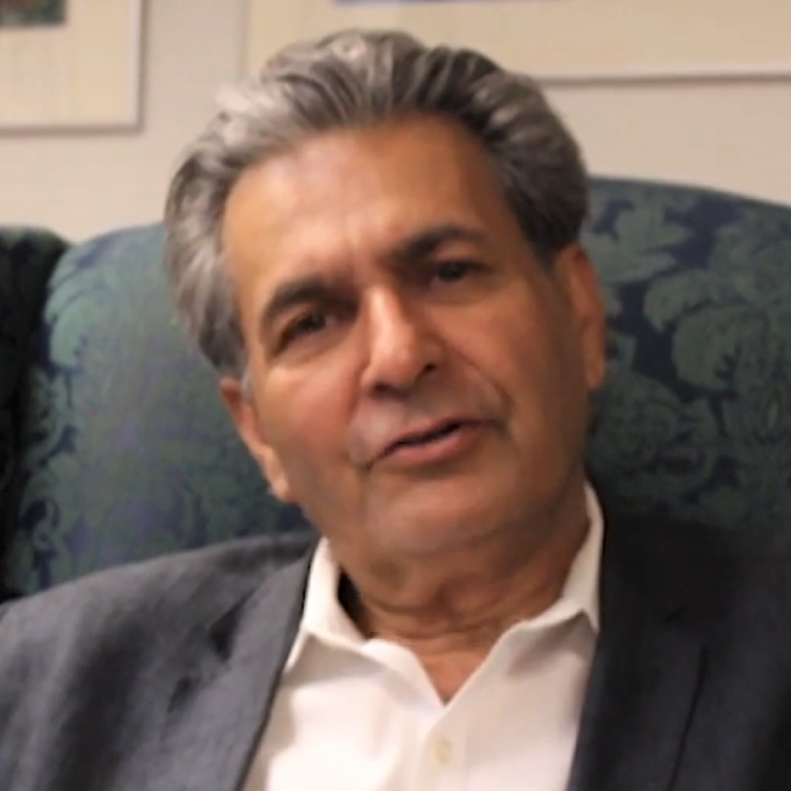

<div class="card">
    
    <div class="card-body">
        <h4 class="card-title">Dr. Ashfaq Ishaq</h4>
        <h5 class="card-title-2">Founder & Chairman</h5>
        <!-- <p class="card-text" style="text-align: center; margin-bottom: 43px">Some quick example text to build on the card title and make up the bulk of the card's content.</p> -->
        <!-- expand arrow -->
        <input type="checkbox" class="contTab" id="b1" checked="checked">
        <p class="short-cont">By establishing ICAF to serve American children as their national arts
            organization and the world's children as their global arts organization, Dr. Ishaq has changed the
            world for children....</p>
        <p class="content-more">
            By establishing ICAF to serve American children as their national arts organization and the world's
            children as their global arts organization, Dr. Ishaq has changed the world for children.
            The Arts Olympiad he launched in 1997 has grown over the years into the world's largest school art
            program.
            In 1998, he produced a national children's art festival, the first-ever in U.S. history, and since
            1999 he has produced the World Children's Festival quadrennially as the "Olympics" of children's
            imagination.
            The ChildArt magazine he launched in 1998 has inspired hundreds of thousands of young readers,
            teachers, and parents.
            Under his direction, ICAF has become a world leader in child art exhibitions and an organizer of
            children's panels at major conferences.
            To empower children, he instituted the World Children's Award. Widely recognized as a global leader
            in children's art and a leading expert in children's creative and empathic development, he is a
            spokesperson for the world's children.
            A multidisciplinary thinker, his research has appeared in the Journal of Conflict Resolution, the
            UNESCO Observatory Journal, the National PTA's "Our Children,"
            The State Education Standard, The Lancet, Cybertherapy and Rehabilitation Journal, and Dynamische
            Psychiatrie.
            He co-authored a book on small-scale enterprises published by the Oxford University Press in 1987.
            His 2013 book, The Creativity Revolution, is available on Amazon. Before founding ICAF, he was
            President of USA International, Inc.,
            Associate Professor of Economics at George Washington University, and Researcher at the World Bank.
        </p>
        <label for="b1" class="readmore"></label>
    </div>
</div>
